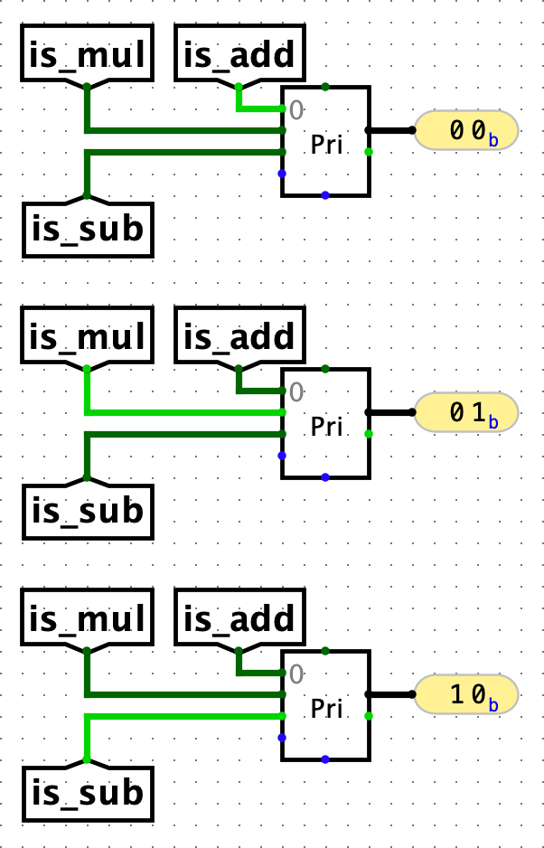

Appendix: Control Logic
The control logic subcircuit takes the instruction bits and outputs all the control signals needed to execute that instruction. Here is a summary of the control signals you should implement:
| Signal | Bit Width | Purpose |
PCSel |
1 | Selects the ALU input for all B-type instructions where the branch is taken (according to the branch comparator output) and all jumps. Selects the PC+4 input for all other instructions. |
ImmSel |
3 | Selects the instruction format so the immediate generator can extract the immediate correctly. The default encoding is [0b000 = I], [0b001 = S], [0b010 = B], [0b011 = U], [0b100 = J], though you're welcome to pick your own (see below). |
RegWEn |
1 | 1 if the instruction writes to a register, and 0 otherwise. |
BrUn |
1 | 1 if the branch instruction is unsigned, and 0 if the branch instruction is signed. Don't care for all other instructions. |
ASel |
1 | Selects whether to send the data in RegReadData1 or the PC to the ALU. |
BSel |
1 | Selects whether to send the data in RegReadData2 or the immediate to the ALU. |
ALUSel |
4 | Selects the correct operation for the ALU. See Task 1 for the mapping of ALUSel values to operations. |
MemRW |
1 | 1 if the instruction writes to memory, and 0 otherwise. |
WBSel |
2 | Selects whether to write the memory read from DMEM, the ALU output, or PC+4 to rd. |
There are two main approaches to implementing this logic:
-
Read-only memory (ROM): Type out the control signals in a table. Use logic gates to determine which row of signals from the table should be outputted for a given instruction. This involves less Logisim wiring and more filling in values in a spreadsheet.
-
Hard-wired control: Use logic gates (e.g. AND/OR/NOT gates, MUXes) to calculate the control bits from the instruction. This involves more Logisim wiring.
Regardless of which approach you choose, you should modify control_logic.circ in each task to implement your control logic.
ROM Approach
Setup
- Make a copy of this spreadsheet: [61C SU23] Project 3B ROM Control Logic.
- For each instruction, you'll fill in the cells under the "Control Signals" header. Do not modify any cells under other headers.
- Copy the data in the "ROM Output" column (not including the headers).
- Open
control-logic.circin Logisim, and click on the ROM. - In the properties tab on the left-hand sidebar, click on "(click to edit)" next to the "Contents" label.
- Click on the upper-left-most data cell (which will be a collection of 4 hex digits without a preceding
0x) and paste your values from earlier into the ROM. You should see the ROM control bits change to the values from your spreadsheet. - Click "Close Window" to exit the ROM programming view.
Filling in Spreadsheet
Some things to keep in mind when filling out the spreadsheet:
- Enter binary digits without the leading
0b(type01instead of0b01). - If the upper-right corner of the control signal's cell turns red, or if you see a warning when you hover over the cell, your cell contents are invalid. Common sources of errors include entering a control signal that has too many or too few bits, or entering characters other than
0or1in a control logic cell. - If a control signal is "don't care" for a certain instruction, you can put any valid value in the corresponding cell.
- Make sure to fill in every cell in a given row. If a row has empty cells, the ROM output value is unreliable (garbage).
- You can use any encoding (which binary digits correspond to which control logic cases) for your control logic, as long as your encoding is consistent with your circuit. For example, suppose you choose to set
ASel = 0for instructions that input the data inRegReadData1to the ALU, andASel = 1for instructions that input the PC to the ALU. When you make a mux withASelas the select bit, input 0 should beRegReadData1and input 1 should be the PC. You could also use the opposite encoding (ASel = 0for PC andASel = 1forRegReadData1) and flip the mux inputs, and the circuit would still behave the same way.
Wiring ROM Inputs
Once you have the spreadsheet ready, you'll need to add wiring to select which row of the ROM table you want to use for a given instruction.
The "ROM Input" column on the spreadsheet indicates the input that must be passed into the ROM for each instruction. For example, your control logic, when passed in an addi instruction, needs to pass 15 (0b1111) into the ROM so the correct entry of control signals can be selected.
To determine what instruction is being inputted into the control logic subcircuit, it might help to use comparators and constants to compare bits of the instruction against some fixed constant value.
To map instructions to their specific input, a Priority Encoder might be helpful. To see how the Priority Encoder works, let's consider a toy example of an ALU that only performs 3 operations: add (ALUSel=0), mul (ALUSel=1), and sub (ALUSel=2). Suppose that we have is_add, is_mul, and is_sub tunnels that tell us whether an instruction requires the ALU to perform that operation. To generate the ALUSel control signal, we can simply connect the is_add, is_mul, and is_sub tunnels to their corresponding ALUSel position (say position 2 for sub) on the Priority Encoder. Now, the Priority Encoder will return the position of the active input signal, which in this case is the correct ALUSel value.

Note: In case there are multiple active signals at the same time, a Priority Encoder returns the largest active position. However, you should try to avoid having multiple active signals at once for this use case. After all, a single instruction can't require the ALU to perform both add and multiply at once.
Wiring PCSel
The PCSel control signal cannot be encoded in the ROM since it depends on BrEq and BrLt, which are not passed into the ROM unit. To complete the control logic, write hard-wired control to drive the PCSel output.